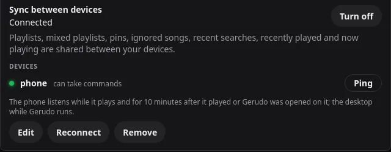

Phone and computer
One library.
Two screens.
No cloud.
Start an album on the computer, walk away, and press Play here on your phone: same queue, same song, same second. Everything stays in step through a small hub in your own home.

Handoff
The music follows you, not the other way round.
- See what the other playsThe song, where it's at and what comes next, even from the phone's lock screen.
- Remote controlPlay, pause, skip, seek, volume and the queue of the other device; whatever you pick plays there.
- One player at a timeStarting music on one device pauses the other. No two rooms playing at once by accident.
- Spotify tooHandoff carries Spotify songs and mixed queues, not just your own files.
The hub
A small box at home keeps your devices in step.
Gerudo's hub runs on a Raspberry Pi next to your music server. It holds the things that should be the same everywhere, and nothing more. No account with anyone, no data leaving your home.
- Shared between devicesPlaylist edits, mixed playlists, pinned playlists, ignored songs, recent searches, Recently played and History.
- Works offlineChange things without a connection; the device catches up when it's back.
- Home and awayA home address and an away address (for example over Tailscale): Gerudo tries one, then the other.

A new computer
Set up a computer by scanning one code.
Install with a single command from your own hub, open Gerudo, and point your phone at the code on screen. Your servers and their passwords arrive, sealed so that only that computer can open them.
- One command to installYour hub serves signed packages for Arch, Debian/Ubuntu and Fedora; updates then come with the system's own updater.
- Passwords stay in the keyringThe system's own keyring on the computer, Android's keystore on the phone. Never in plain files.
- Remove a device anytimeThe phone lists every linked computer, and one tap cuts it off.
Shared memory
Both devices remember the same evening.
History and Recently played come from every device, so the album you started on the phone on the bus is right there on the computer at home, with "on phone" next to each song.